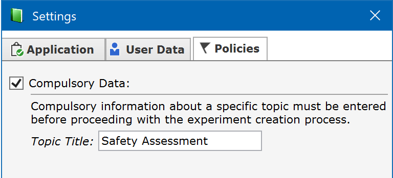
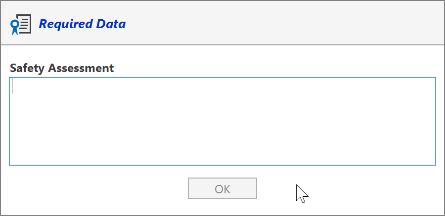
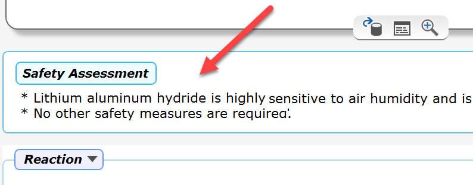

Compulsory Data
National regulations and company policies may apply when working with an ELN. This also can include compulsory user input for a specific topic (e.g. for providing a safety assessment for each experiment). Espresso ELN offers the option to enforce such required input.
A compulsory data policy can be implemented in the application settings (Dashboard toolbar -> Settings). In the Settings dialog, select the 'Policies' tab, activate the 'Compulsory Data' checkbox and finally enter a descriptive title for the compulsory data to be entered by the user during experiment creation. This setting must be specified by each user individually.

When you subsequently create an experiment, now the dialog below will appear immediately after entering the reaction sketch, or when cloning an experiment. You can only proceed after entering some text:

When done, a panel containing above compulsory data is inserted between the sketch area and the first experiment section. Its contents can be edited by left-clicking its text, which displays above data entry dialog again.
